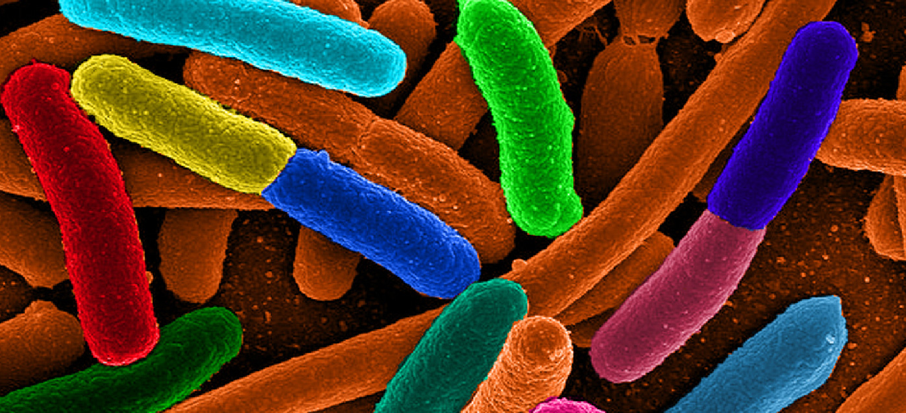

Introduction to Exponential and Logarithmic Functions

Focus in on a square centimeter of your skin. Look closer. Closer still. If you could look closely enough, you would see hundreds of thousands of microscopic organisms. They are bacteria, and they are not only on your skin, but in your mouth, nose, and even your intestines. In fact, the bacterial cells in your body at any given moment outnumber your own cells. But that is no reason to feel bad about yourself. While some bacteria can cause illness, many are healthy and even essential to the body.
Bacteria commonly reproduce through a process called binary fission, during which one bacterial cell splits into two. When conditions are right, bacteria can reproduce very quickly. Unlike humans and other complex organisms, the time required to form a new generation of bacteria is often a matter of minutes or hours, as opposed to days or years.Todar, PhD, Kenneth. Todar's Online Textbook of Bacteriology. http://textbookofbacteriology.net/growth_3.html.
For simplicity’s sake, suppose we begin with a culture of one bacterial cell that can divide every hour. Table 1 shows the number of bacterial cells at the end of each subsequent hour. We see that the single bacterial cell leads to over one thousand bacterial cells in just ten hours! And if we were to extrapolate the table to twenty-four hours, we would have over 16 million!
| Hour | 0 | 1 | 2 | 3 | 4 | 5 | 6 | 7 | 8 | 9 | 10 |
| Bacteria | 1 | 2 | 4 | 8 | 16 | 32 | 64 | 128 | 256 | 512 | 1024 |
In this chapter, we will explore exponential functions, which can be used for, among other things, modeling growth patterns such as those found in bacteria. We will also investigate logarithmic functions, which are closely related to exponential functions. Both types of functions have numerous real-world applications when it comes to modeling and interpreting data.